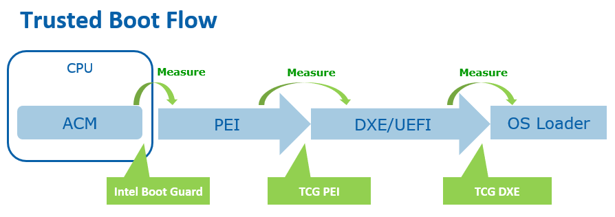

Introduction to UEFI
Published on January 3rd, 2025 by Emilio Marquez
UEFI (Unified Extensible Firmware Interface) is the modern firmware interface that replaces the traditional BIOS in most of today’s computers. Originally known as EFI (Extensible Firmware Interface), it was developed by Intel in the 1990s to overcome the limitations of legacy BIOS—such as operating in 16-bit mode and having limited address space. Over time, and with collaboration from multiple manufacturers (plus the formation of the UEFI Forum in 2005), EFI evolved into UEFI, adopting an open and extensible standard.
Features and Functions of UEFI
- Modern and Flexible Interface: Supports graphical interfaces, mouse input, and complex pre-boot applications, offering a better user experience.
- Modular Architecture: Allows independent drivers and applications to load in phases during boot, improving scalability and simplifying updates.
- Security: Includes features like Secure Boot, ensuring only signed code executes during startup, protecting the system from malware.
- Support for Large Memory and Disks: Enables booting from storage devices larger than 2.2 TB—something traditional BIOS could not handle.
- Boot Phases: UEFI handles hardware initialization and hands off control to the operating system through multiple stages (SEC, PEI, DXE, BDS, TSL, and Runtime).
Historical Context
Before UEFI: BIOS (Basic Input/Output System) was the dominant firmware for decades, but had limitations regarding speed, memory handling, and modern functionality.
The Birth of EFI: Intel created EFI in the mid-1990s to address these shortcomings, introducing a more flexible and powerful interface.
Evolution into UEFI: Through industry-wide adoption and standardization by the UEFI Forum, EFI evolved into UEFI—an open standard that modern computers now rely on.
In short, UEFI marks the transition from the constraints of legacy BIOS to a more advanced, secure, and extensible platform. Intel initiated its development in the 1990s, and it became an open standard around 2005, thanks to the collaboration of major tech-industry players.
The UEFI Boot Process can be divided into six distinct phases. These phases work together to ensure a secure, modular, and robust initialization of the platform before handing control over to the operating system.
1. SEC (Security Phase)
The SEC phase is responsible for establishing a trusted foundation. It sets up a minimal environment to begin code execution, verifies firmware integrity, and prepares essential CPU functions. This stage ensures that subsequent phases can run securely.
2. PEI (Pre-EFI Initialization)
During the PEI phase, the system initializes critical hardware resources, including main memory. PEI modules (PEIMs) gather information about the platform and pass this data forward to the next stage. Proper memory training is crucial at this point, as it helps ensure reliable DRAM operation for later phases.
3. DXE (Driver Execution Environment)
The DXE phase loads and executes drivers, enabling a wide range of platform features. This environment is highly modular, allowing different firmware drivers to be loaded on demand. The MRC (Memory Reference Code) is often part of DXE, further refining memory settings and enabling stable operation.
4. BDS (Boot Device Selection)
In the BDS phase, the firmware determines which boot devices are available and selects the appropriate device to load the operating system from. Official guidelines underscore the importance of consistent device enumeration here, ensuring a seamless handoff to the OS loader.
5. TSL (Transient System Load)
TSL is sometimes described as part of BDS in certain references, but Beyond the BIOS treats it as its own stage. In TSL, the firmware transfers control to the transient OS loader or boot manager, bridging the gap between the firmware driver environment and the OS startup routines.
6. RT (Runtime)
Finally, the RT (Runtime) phase is where UEFI services are made available to the operating system as needed. Certain UEFI runtime functions, such as variable services, remain accessible even after the OS has taken over. This flexibility is one of UEFI’s major advantages over legacy BIOS.
Together, these six phases (SEC, PEI, DXE, BDS, TSL, and RT) illustrate how UEFI orchestrates everything from low-level security checks to boot device selection and ongoing runtime services. By adhering to the guidelines in Beyond the BIOS and other official sources, firmware engineers can build a reliable, future-ready boot process that benefits both hardware and software ecosystems.
Some Great Resources
My personal recommendation for learning more about UEFI is to visit the UEFI Forum page, specifically the “Videos and Presentations” section. There, you can find details on the evolution of UEFI specifications, which is an excellent starting point if you want to build or modify your own firmware.
Another valuable resource is the book Beyond the BIOS . Written by firmware developers (many from Intel), it provides a comprehensive look at UEFI’s internal design. This can be particularly helpful since few educational institutions cover firmware details beyond a high-level overview of “what happens during boot time.”
Finally, if you’re interested in understanding computer architecture more deeply—especially DRAM, ISA trade-offs, and CPU core operations—consider watching Professor Onur Mutlu’s lectures at Carnegie Mellon University. These videos explain concepts like ECC (Error Correction Code), cache memory in different levels, microarchitecture, and data pipelining. Such knowledge greatly benefits engineers working at the hardware-software boundary.
Focus on the First Three Phases
In this article, I emphasize the SEC, PEI, and DXE phases because these are where I’ve spent most of my time working, as mentioned before. The MRC is integrated into these phases, although it occupies only a small portion of the overall firmware flow.
SEC also referenced as ACM which means Alias Checker Module, sets the initial foundation, verifying firmware integrity by making sure it is compatible with the platform, for example if it has the IA32 instruction set, if it is for a 32-bits platform or a 64-bits platform, and preparing the CPU for subsequent phases by stating the directions of important devices, preparing the main communication protocols such as I2C and I3C to send the first commands to start.
After SEC, the PEI phase kicks in, initializing memory and collecting essential platform data. This is typically where memory training is performed to ensure reliable DRAM but it could change between platforms, also in this phase there are what is called a Firmware Volume, and not only one, there are a lot, each of this Firmware Volume has its own name and its own protocols to do some specific tasks, like the uCode, PrimeCode, ACTM and some others, and to be more specific the ACTM Firmware Volume, takes care of verifying the security devices like TPM, and information of the DIMMs (Dual In-line Memory Module), usually these ones are working with DDR technologies to understand them, you will ned to investigate through the JEDEC Specs.
Finally, DXE loads and executes drivers for the rest of the system’s hardware, such as storage and network devices. It also constructs data structures to manage driver execution order and loads protocols that will pass control to the BDS phase.
Conclusion
UEFI represents a significant leap forward from legacy BIOS, offering improved security, modularity, and flexibility for modern computing platforms. Whether you’re a firmware engineer, a student exploring system-level development, or simply someone curious about how your computer boots up, understanding these phases and resources can deepen your appreciation for the intricate work that happens behind the scenes.
By focusing on collaboration, industry standards, and a commitment to extensibility, UEFI has paved the way for secure and robust hardware initialization across countless devices worldwide. Regardless of the specific company or project you’re involved in, gaining familiarity with UEFI’s structure and boot phases can significantly enhance your capability to design, troubleshoot, or innovate within system firmware.